The Only Authorized Lotus Dealer
Vegas Auto Gallery is the only authorized Lotus dealership in the state of Nevada.
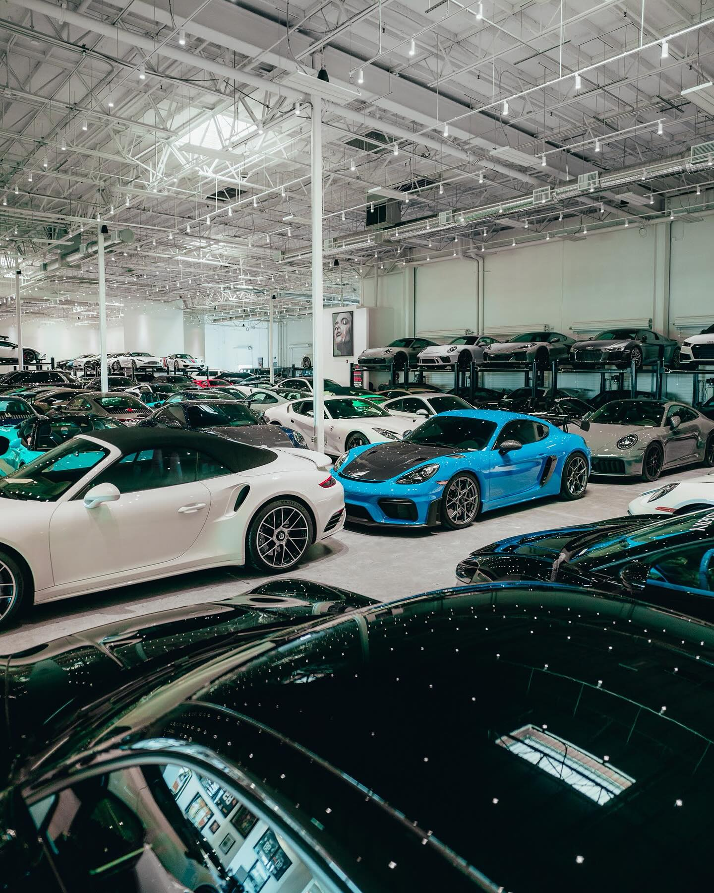
One enthusiast's conviction, a bench of specialists, and the marque we were entrusted with.
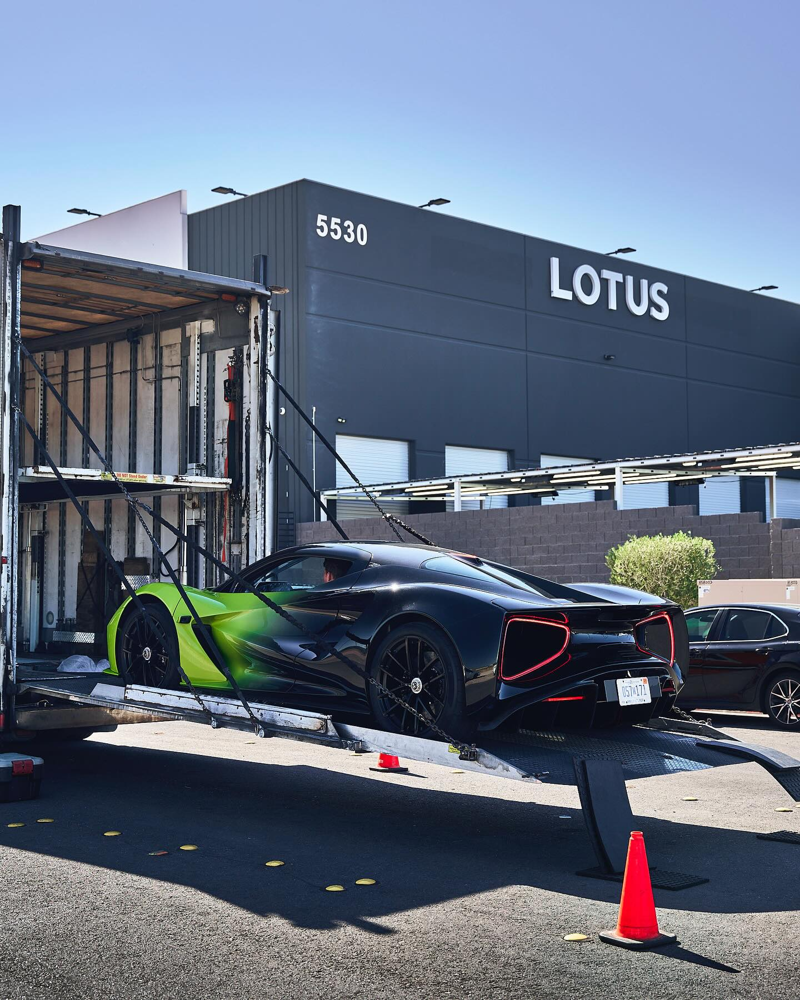
Vegas Auto Gallery is the brainchild of Nick Dossa, a highly experienced automotive enthusiast who has spent years building a reputation in the luxury and exotic vehicle industry.
Since its inception, Vegas Auto Gallery has built a strong reputation both locally and nationwide, supported by a growing clientele of enthusiasts and collectors. Today, the dealership proudly operates two locations situated in the heart of the Las Vegas automotive marketplace.
Our inventory is carefully curated to meet the expectations of discerning clients, featuring luxury and exotic vehicles sought after by collectors and enthusiasts alike.
As Las Vegas continues to grow with new sports franchises, businesses, and a thriving community, Vegas Auto Gallery remains committed to delivering an elevated automotive experience to clients both locally and across the country.
Vegas Auto Gallery is the only authorized Lotus dealership in the state of Nevada.
In a short time we have become the top-performing Lotus dealership in the nation.
Sales and service operate from two locations in the heart of the Las Vegas automotive marketplace.
Official Luxury Car Partner of the Vegas Golden Knights.
Sales, acquisition, and service — photographed where you will actually meet them.
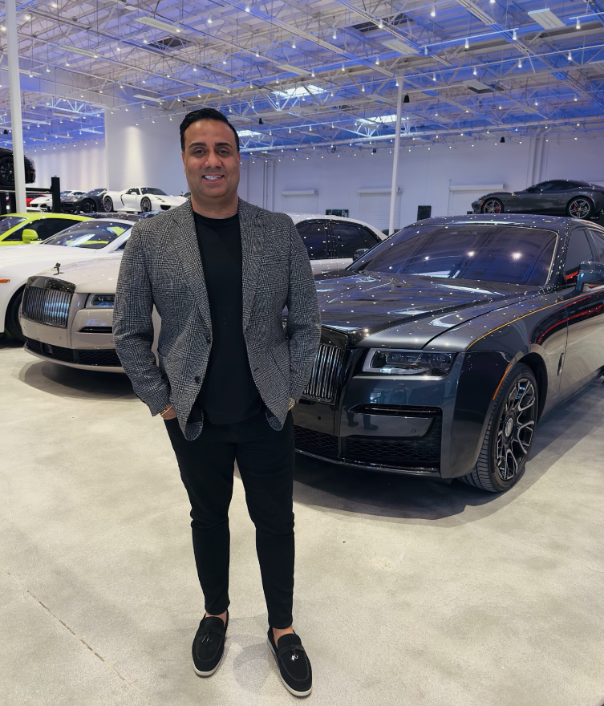
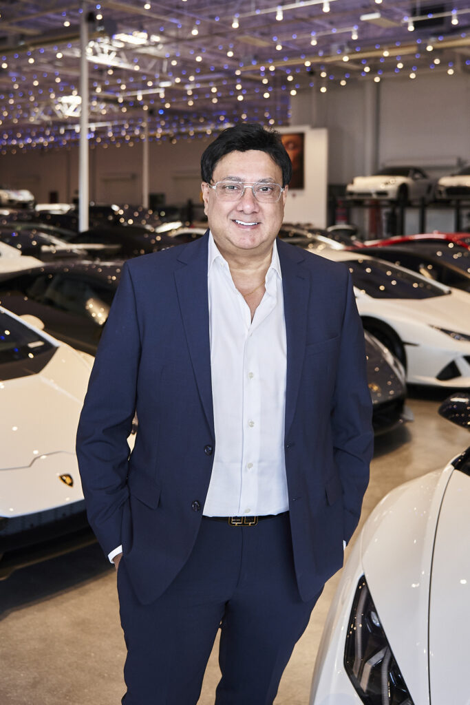
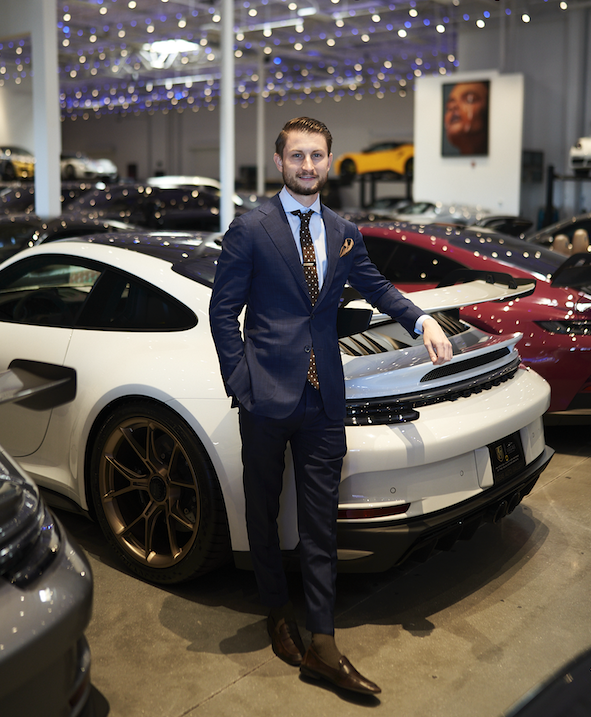
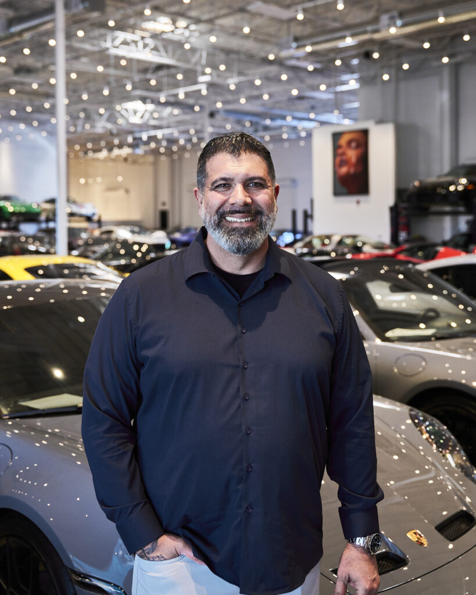
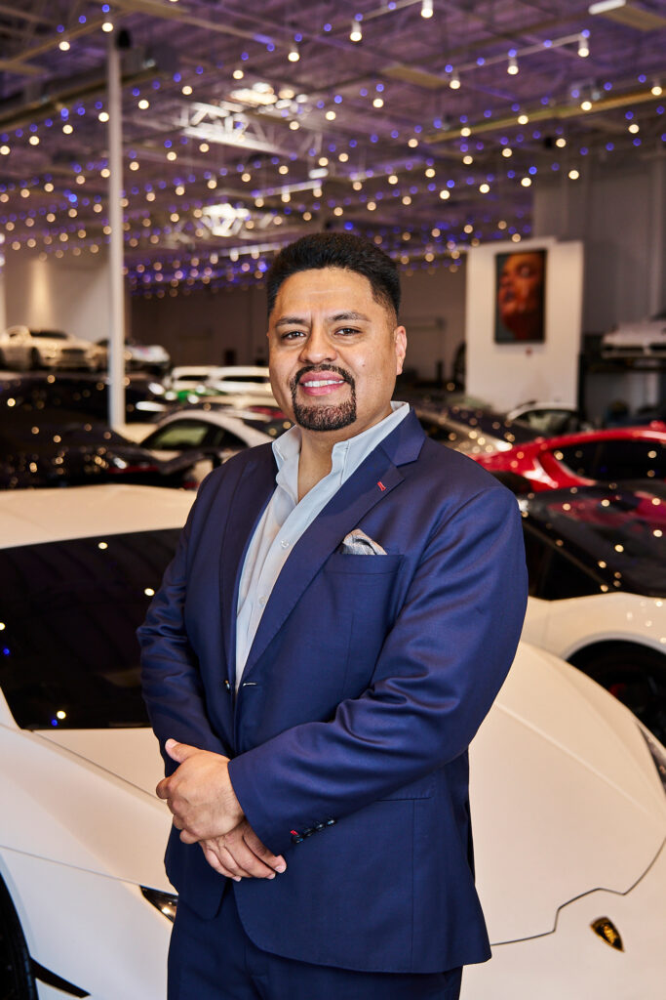
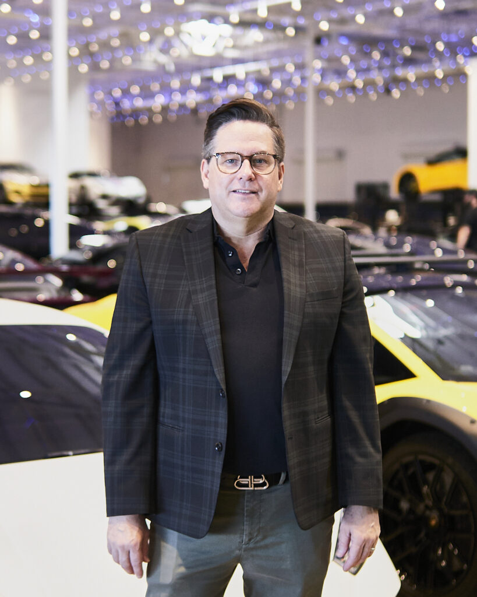
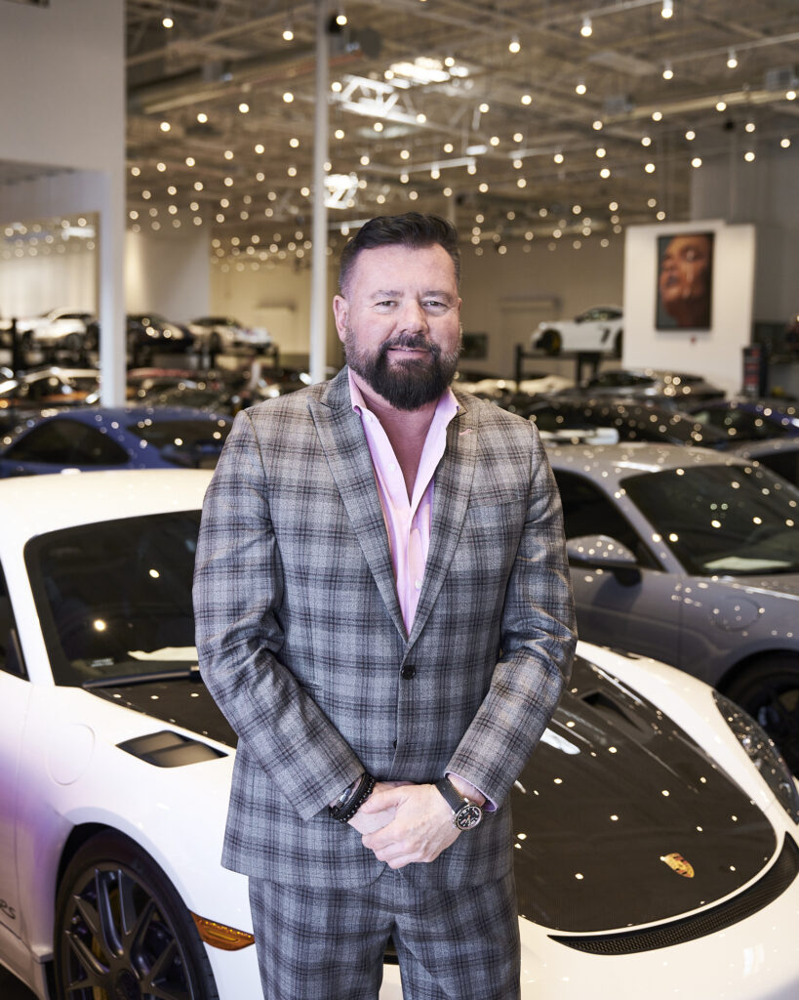
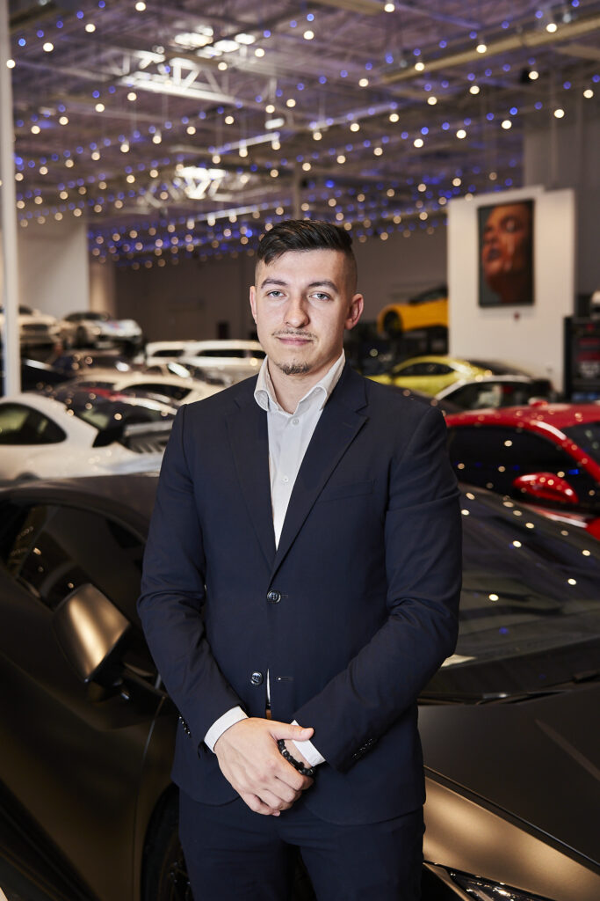
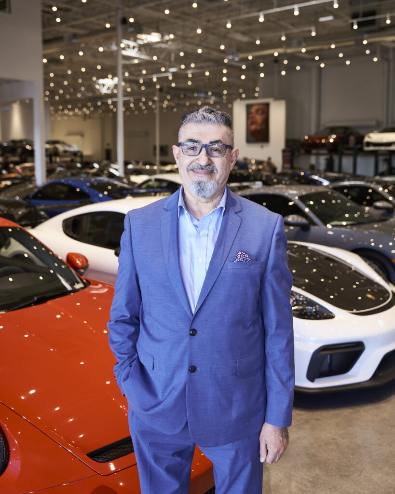
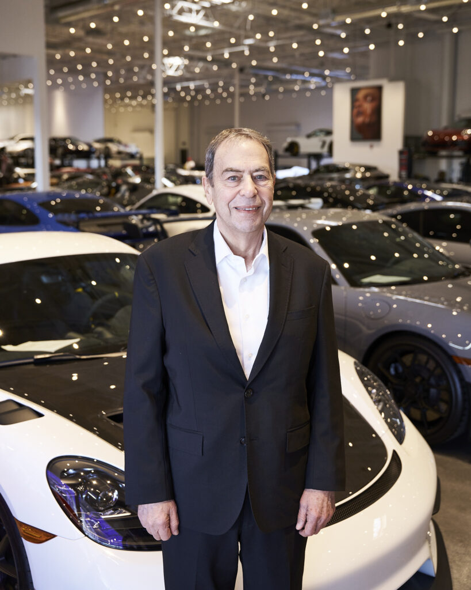
Vegas Auto Gallery is the only authorized Lotus dealership in the state of Nevada. This is the road that led here — drag or scroll it.
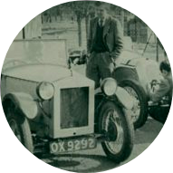
Founder, Anthony Colin Bruce Chapman, studied structural engineering at University College in London
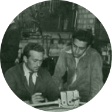
During his leave periods from the RAF, Chapman built his second trials car
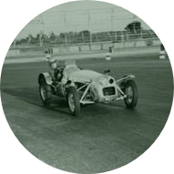
Founder, Anthony Colin Bruce Chapman, studied structural engineering at University College in London
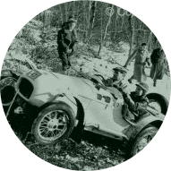
Chapman formed the Lotus Engineering Company
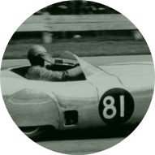
The team comes into being.
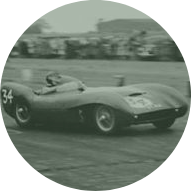
The Mark 6 was much in demand, but after manufacturing only 100 cars, orders for the pure sports racing cars took priority. Chapman gave up his job to become fully employed with the production of Lotus cars at the Hornsey factory.
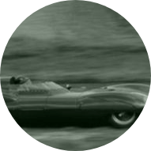
Developed as a descendant of the Mark 9
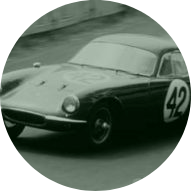
The Eleven achieved a historic win in the 750cc Class of the Index of Performance at Le Mans
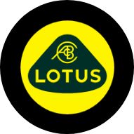
This is the year Chapman established Group Lotus
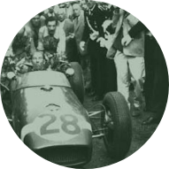
Focused on winning, Chapman adopted and improved upon the mid-engined layout of the successful Cooper race cars.

Keen to maintain Lotus’ pre-eminence in Junior racing, Chapman developed the Type 20.
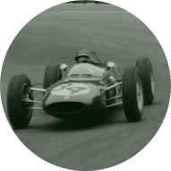
The Type 21 was the FIRST F1 car to use a reclining driving position.
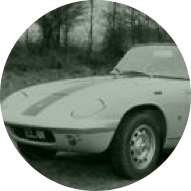
The Type 26 Lotus Elan was introduced.
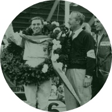
With Jim Clark at the wheel of the Type 25, Lotus secured its first Formula One Constructors’ Championship, and the Drivers title.
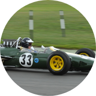
The Type 33 was an evolution of the monocoque Type 25.
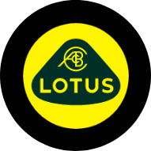
Type 36 Lotus Elan fixed head coupe made its debut.
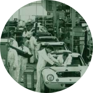
It was in this year that Lotus moved to a purpose-built factory based in Norfolk.
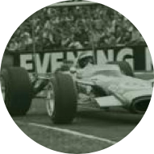
The FIRST car to be powered by the legendary Cosworth-Ford DFV V8 engine.
1968 proved to be a tragic year for Team Lotus. They were to lose the heroic and talented Jim Clark in a Formula 2 race at Hockenheim on 7th April.
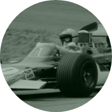
The Type 33 was an evolution of the monocoque Type 25.
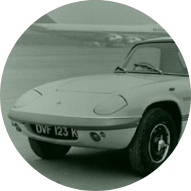
In the January the famous Elan Sprint sports car was introduced with the new 126 bhp ‘Big Valve’ engine.
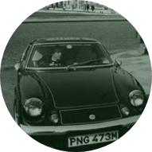
Europa went on to realize its full potential with a change of engine and improvements to the handling, cabin space and styling. It became one of the worlds quickest production sports cars.
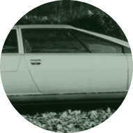
The Lotus Esprit concept, designed by Ital Design, is shown for the first time.
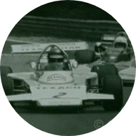
Lotus causes confusion by naming its next race car the Type 74, a type number already given to the Europa. However, due to the sponsorship scheme on the car, the car became more commonly known as the ‘Texaco Star’.
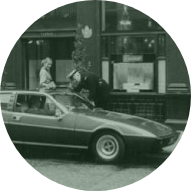
Lotus’ first 4 seater sports car was launched, the attractively shaped Type 75 Elite.
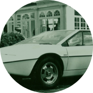
At the Paris Motor show Lotus stunned the world with the premier of the dramatic Guigiario-styled Esprit (Type 79).
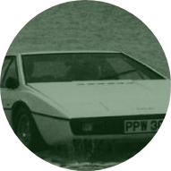
‘The name’s Bond… James Bond…’
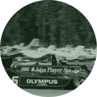
Team Lotus dominated Formula One, achieving 12 pole positions, and 8 wins, and winning the double.
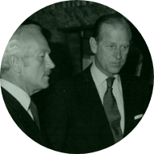
HRH Duke of Edinburgh visited the Hethel factory.
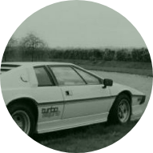
The awesome Esprit Turbo was launched in tremendous style at London’s Royal Albert Hall.
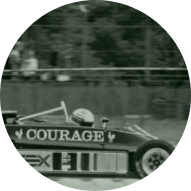
The FIRST car designed with a carbon fibre monocoque, and two chassis.
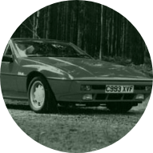
The 2+2 (Type 89) Excel was launched in October, replacing the Eclat.
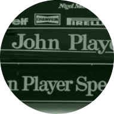
Chapman was greatly missed, but the spirit he imparted to his team and his colleagues lived on.
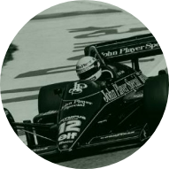
In a bold step to demonstrate its commitment to becoming a major automotive engineering consultancy, Lotus invested £500,000 and opened two of the most sophisticated computer-controlled engine test cells in Europe.

As proof that Team Lotus had become a breeding ground for young talent, Ayrton Senna replaced the departing Nigel Mansell.
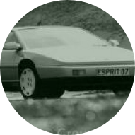
Lotus marked 20 years at the Hethel site. General Motors acquired 100% shareholding of Group Lotus plc.
At the London Motorfair the new Esprit Turbo made its debut; restyled by designer Peter Stevens, both inside and out. Stevens managed to give the car a more aggressive appearance, but retain its iconic stance. A normally aspirated model joined the line-up.
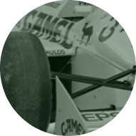
Formula One World Champion, Nelson Piquet joined Lotus, following Ayrton Senna’s departure.
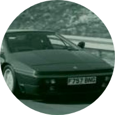
The launch of the most powerful Lotus supercar to date: the 264bhp, 164 mph Esprit Turbo SE, with a 0-60 mph speed from standstill of 4.7 seconds.
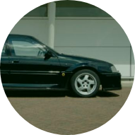
The legendary Lotus Carlton (Lotus Omega outside the UK) was launched.
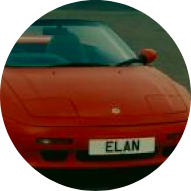
The Elan received the British Design Council award.
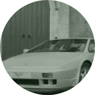
Doc Bundy, driving the Sport Esprit X180R, took the Drivers’ title in the Sports Car Club of America World Challenge for ‘street-legal’ cars.
The Esprit S4 had a minor facelift and a range of mechanical refinements including power-steering as standard.
The S4S came with 300bhp (224 kW; 304 PS), new wheels and tyres, and revised suspension settings.
The Lotus GT race programme was brought in-house in preparation for an all-out assault on UK sports car endurance racing.
Perusahaan Otomobil Nasional Bhd (Proton) announced it had acquired an 80% majority shareholding in Group Lotus plc from ACBN Holdings S.A. (the holding company of Bugatti International).
The Elise proved more of a hit than even Lotus expected – the 1000th Elise rolled off the production line in the middle of May. This forced a rethink on production volumes, which were raised to 2500 units a year from the 800 originally planned.
The lightweight and big-braked Esprit Sport 350 supercar was released as a dramatic limited edition model.
Lotus revealed an all-new mini-supercar concept that fitted into the range between the Elise and Esprit.
On the eve of the inaugural round of the Autobytel Lotus Championship race series, Lotus thrilled the crowds by unveiling the new Exige.
PROTON acquired the remaining shares from ACBN Holdings and become 100% shareholders in Lotus Group International Ltd.
Lotus became the shirt sponsor for Norwich City Football team, ‘the Canaries’, reinforcing links with the local community and a popular sport.
At the 2004 Geneva Show, Lotus presented the new Lotus Exige on the world stage.
At the Geneva motor show Lotus Engineering unveiled APX (“Aluminium Performance Crossover” ) vehicle, a fully running concept prototype embodying many of the technological philosophies Lotus had been following in its R&D programmes.
Lotus went into the Guinness Book of Records for the biggest meet of any marque when 311 Lotus sports cars turned up at Brands Hatch and formed a nose to tail lap.
The Lotus Sport 2-Eleven GT4 Supersport race car asserted itself at the pinnacle of the 2-Eleven range, combining race winning pedigree with unparalleled handling and balance.
The Lotus Evora Type 124 Endurance Racecar was developed from the award-winning Evora road car
The Lotus Evora Cup was unveiled in January at the Autosport International; a GT4-spec racing version, and a championship to go with
The Lotus test track at Hethel was renovated in 2011 and officially re-opened on 21 June
Lotus headlined the world’s biggest car culture event in the summer, the Goodwood Festival of Speed 2012, to celebrate its glorious history and toast the present.
A visually enhanced and optimised version of the mid-engined 3.5 litre Evora is launched, available in both naturally-aspirated or supercharged variants.
Jean-Marc Gales joined the company in late-spring. The multi-lingual, international, automotive businessman took over the reins of Group Lotus plc in May.
Heralding the next generation of Lotus high performance sports cars, the 3-Eleven is the company’s quickest and most expensive series production car ever.
The fastest ever line up of Lotus production road cars was showcased at the 2016 Geneva Motor Show
The ballistic Exige Cup 430 is launched on 9th November.
Exige Sport 410 launched.
The Evija makes its dynamic debut at the famous Hethel test track.
PRODUCTION COMES ALIVE Evija’s new Hethel manufacturing facility readied to begin series production.
The route arrives here. Vegas Auto Gallery carries the marque in Nevada as its only authorized dealership — and, in a short time, the top-performing Lotus dealership in the nation.
Las Vegas, NV 89118
Mon – Fri 9:00 AM – 7:00 PM · Sat 9:00 AM – 6:00 PM · Sun Closed
Suites 130/135, Las Vegas, NV 89118
Mon – Fri 8:00 AM – 5:30 PM · Sat By Appointment · Sun Closed
Enclosed, insured transport, door to door — we serve clients locally and across the country.
Browse the collection